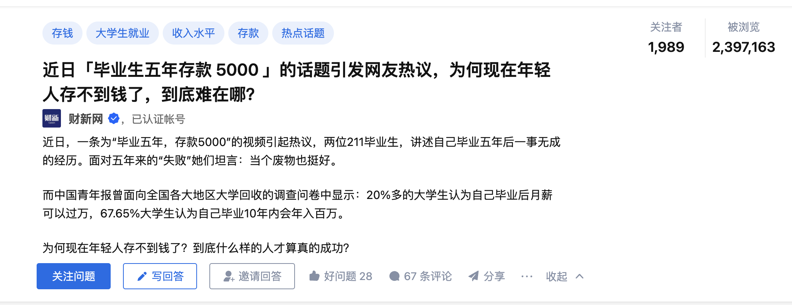

今天刷知乎热榜话题，看到 “近日「毕业生五年存款 5000 」的话题引发网友热议，为何现在年轻人存不到钱了，到底难在哪？”
近日，一条为“毕业五年，存款5000”的视频引起热议，两位211毕业生，讲述自己毕业五年后一事无成的经历。面对五年来的“失败”她们坦言：当个废物也挺好。
而中国青年报曾面向全国各大地区大学回收的调查问卷中显示：20%多的大学生认为自己毕业后月薪可以过万，67.65%大学生认为自己毕业10年内会年入百万。
为何现在年轻人存不到钱了？到底什么样的人才算真的成功？

讨论
我看了原视频，我看到的是两个女孩不知道自己想要什么，五年的时间换了十几分工作。好像那只下山的小猴子，看到玉米掰玉米，看见桃子摘桃子，看见西瓜搬西瓜，看到兔子追兔子，见一个爱一个，爱一个扔一个，喜欢的东西永远在变，却从来没认真想过自己到底要什么。
两个女孩最大的 「问题」 是人生观不清晰，人生观与价值观不配套，依附于人生观的价值观由此会有矛盾，内耗，无所适从。 今天的热门问题，与 「为什么这么努力，却过不好自己的一生呢？」 类似，拿社会主流的价值观对比，发现自己混的不好。但路都是自己瞎走的， 本质是怎么选路，提早确立积极的、清晰的人生观就显得很重要。
三观
我自己也算是走过 「弯路」，网上经常浏览到三观(世界观、人生观、价值观)，但一直没深入思考， 不求甚解。别人问我我也说不出个人见解，托读博认识的一位朋友， 直到现在勉强说出三观通俗易懂的含义。
| 三观 | 解释 | 特性 |
|---|---|---|
| 世界观 | 一般是家庭、学校、社会等综合环境，长期塑造而成。是一个人的综合的、全面的、本能的认知内核。 | 由于是长期悄无声息的形成的，所以也是最难短时间改变的。世界观是人生观和价值观的基础 |
| 人生观 | 自己想过什么样的人生，想过什么样的生活。 | 千百年来，绝大多数人的人生观是 「三亩地、两头牛，老婆孩子热炕头」 。人生观没有高低贵贱之分，区别在于是否有清晰的人生观。 |
| 价值观 | 合乎社会规范的前提下，为了实现自己的人生观， 总要做一些取舍，为此所构建的决策依据 | 凡事预则立不预则废， 做事有轻重缓急，如值不值得、重不重要、有没有用。。。。。。 |
可视化
通过可视化来理解道理的威力， 假设在开始， 有两个相同的人， 区别在于是否有清晰稳定的人生观， 查看四十年后两者财富差异。
| 人 | 某种表现的行为 |
|---|---|
| A | 不知道人生方向和目标，换城市、换行业，换工作，月光族，技能收入水平一直没有大的起色，存在短暂失业，造成财富损耗。 |
| B | 有坚定明确的人生方向目标，一直围绕着目标前进， 选定目标方向，技能和收入一直在稳步提升，财富一直积累。 |
在技能(收入)水平进步， B年华进步率更快。在储蓄率方面， B的出率率一直比A高。下面是我编的代码，可视化两者四十年的财富积累。
import matplotlib.pyplot as plt
# A的收入增长率和储蓄率
rate1 = 0.00
savings1 = 0.1
# B的收入增长率和储蓄率
rate2 = 0.08
savings2 = 0.5
# 定义初始收入和储蓄
income1 = 30000
income2 = 30000
savings1_total = 0
savings2_total = 0
# 定义两个列表来记录财富积累情况
wealth1 = [income1]
wealth2 = [income2]
# 计算40年后的财富积累情况
for i in range(40):
income1 *= (1 + rate1)
income2 *= (1 + rate2)
savings1_total += income1 * savings1
savings2_total += income2 * savings2
wealth1.append(income1 + savings1_total)
wealth2.append(income2 + savings2_total)
# 计算40年后的倍数
times = round(wealth2[-1]/wealth1[-1])
# 可视化结果
plt.plot(wealth1, label='A')
plt.plot(wealth2, label='B')
plt.title('Wealth Accumulation over 40 years')
plt.xlabel('Years')
plt.ylabel('Wealth')
plt.legend()
plt.text(38, wealth2[-1], f'{times}x')
plt.show()

最后
上述的讨论和可视化是从钱财这一维度讨论的，我从小生活在小生意人家，周围亲人也都是小商人家，又学的经济管理学， 分析总是带着很强的个人观念。
钱财只是实现自己人生的工具，条条大路通罗马。 现在社会能允许多种价值的实现方式， up主很欢乐，带给大家欢乐，也缓解了很多人的焦虑。 这个视频爆火后，现在up主已经涨粉至12w。up主最新的视频里已经有透露自己擅长新媒体工作， 相信这么多关注者，总会有up主的工作机会。希望 up 主能有更好的人生， 带给大家更多正能量的欢乐。